Bert原文笔记
摘要：
我们引入了一种名为 BERT 的新的语言表示模型，它代表 Transformers 的双向编码器表示。与最近的语言表示模型不同，BERT 旨在通过联合调节所有层中的左右上下文来预训练未标记文本的深度双向表示。因此，预训练的 BERT 模型只需一个额外的输出层即可进行微调，从而为各种任务（例如问答和语言推理）创建最先进的模型，而无需对特定于任务的架构进行大量修改。
BERT 概念简单，实验结果更好。它在 11 项自然语言处理任务上获得了最新的结果，包括将 GLUE 分数提高到 80.5%（绝对提高 7.7%）、MultiNLI 准确率提高到 86.7%（绝对提高 4.6%）、SQuAD v1.1问答测试 F1 达到 93.2（绝对提高 1.5 分），SQuAD v2.0 测试 F1 达到 83.1（绝对提高 5.1 分）。
1.介绍
语言模型的预训练已被证明可以有效改善许多自然语言处理任务。其中包括句子层面的任务，例如自然语言推理和释义，其目的是通过整体分析句子来预测句子之间的关系，以及token层面的任务，例如实体命名（人名，街道名字）的识别和问答，其中模型需要在token层面产生细粒度的输出。
以下是将预训练的语言表示应用于下游任务的两种现有策略：基于特征和微调。
- 基于特征的方法：例如ELMo，使用特定于任务的架构，其中包括将预训练得到的的表示作为附加特征。
- 微调方法：例如生成式预训练变压器（OpenAI GPT），引入了最少的特定于任务的参数，并通过简单地微调所有预训练参数来对下游任务进行训练。
这两种方法在预训练期间都使用相同的目标函数，它们使用单向语言模型来学习通用语言表示。
我们认为当前的技术限制了预训练表示的能力，特别是对于微调方法。主要限制是标准语言模型是单向的，这限制了预训练期间可以使用的架构的选择。例如，在 OpenAI GPT 中，作者使用从左到右的架构，其中每个token只能关注 Transformer 的自注意力层中的先前token。这种限制对于句子层面任务来说并不是最优的，并且当将基于微调的方法应用于token层面的任务（例如问答）时可能非常有害，因为在这些任务中，从两个方向合并上下文信息是至关重要。
句子层面任务：比如判断一个句子的情绪是不是对的，从左看到右和从右看到左都是可以的
在本文中，我们通过提出 BERT：来自 Transformers 的双向编码器表示来改进基于微调的方法。 BERT 受Cloze任务（Taylor，1953）的启发，采用“掩码语言模型”(MLM）预训练目标来缓解前面提到的单向性约束。掩码语言模型随机屏蔽输入中的一些token，目标函数是基于其上下文来预测那些被屏蔽的token。与从左到右的语言模型预训练不同，MLM 目标使表示能够融合左右上下文，这使我们能够预训练深度双向 Transformer。除了掩码语言模型之外，我们还使用“下一个句子的预测”任务来联合预训练文本对表示。我们论文的贡献如下：
-
我们证明了双向预训练对于语言表示的重要性。与雷德福等人使用单向语言模型进行预训练不同，BERT 使用MLM来实现预训练的深度双向表示。这也与 Peters 等人形成鲜明对比，它使用独立训练的从左到右和从右到左 语言模型的浅层串联。
-
我们表明，预先训练的表示减少了对许多精心设计的任务特定架构的需求。 BERT 是第一个基于微调的表示模型，它在大量句子级和标记级任务上实现了最先进的性能，优于许多特定于任务的架构。
-
BERT 推进了 11 项 NLP 任务的最新技术。代码和预训练模型可在https://github.com/google-research/bert上获取。
总结：
- 将预训练的语言表示应用于下游任务的两种现有策略：基于特征和微调。
- 标准语言模型是单向的，这限制了预训练期间可以使用的架构的选择。，在某些语言任务中，利用上下文信息是至关重要的。
- BERT模型主要完成两个任务：“掩码语言模型"与"下一个句子预测”。"掩码语言模型"是指做完形填空时可以看左右的信息；下一个句子预测即给两个句子，判断两个句子在原文中是不是相邻的。
2. 相关工作
预训练通用语言表示有着悠久的历史，我们在本节中简要回顾一下最广泛使用的方法。
2.1 无监督的基于特征的方法
学习广泛适用的单词表示几十年来一直是一个活跃的研究领域，包括非神经和神经方法。 预训练的词嵌入是现代 NLP 系统不可或缺的一部分，与从头开始学习的嵌入相比，它提供了显着的改进。为了预训练词嵌入向量，使用了从左到右的语言建模目标，以及区分左右上下文中正确和错误单词的目标。
这些方法已推广到更粗的粒度，例如句子嵌入或段落嵌入。为了训练句子表示，先前的工作使用目标函数对下一个句子的候选进行排名，在给定前一个句子的表示的情况下从左到右生成下一个句子单词，或去噪自动编码器导出的目标。
ELMo及其前身沿着不同的维度概括了传统的词嵌入研究。他们从从左到右和从右到左的语言模型中提取上下文相关的特征。每个token的上下文表示是从左到右和从右到左表示的串联。当将上下文词嵌入与现有的特定任务架构集成时，ELMo 推进了几个主要 NLP 基准的最新技术，包括问答，情感分析和命名实体识别。梅拉穆德等人(2016) 提出通过使用 LSTM 从左右上下文预测单个单词的任务来学习上下文表示。与 ELMo 类似，他们的模型是基于特征的，而不是深度双向的。费杜斯等人 (2018) 表明完形填空任务可用于提高文本生成模型的鲁棒性。
2.2 无监督微调方法
与基于特征的方法一样，(Collobert and Weston, 2008)第一个在这个方向上仅使用来自未标记的文本来预训练词嵌入参数。
最近，产生上下文标记表示的句子或文档编码器都是根据未标记的文本进行预训练，然后在监督下游任务进行微调。这些方法的优点是几乎不需要从头开始学习参数。至少部分由于这一优势，OpenAI GPT在 GLUE 基准测试的许多句子级任务上取得了先前最先进的结果。从左到右的语言模型——编码和自动编码器目标已用于预训练此类模型。
2.3 从有标记的数据上做迁移学习
还有一些工作展示了从具有大型数据集的监督任务中的有效迁移，例如自然语言推理和机器翻译。计算机视觉研究还证明了从大型预训练模型中进行迁移学习的重要性，其中一个有效的方法是对使用 ImageNet 预训练的模型进行微调。
BERT以及它之后的一系列工作证明了在NLP上面需要没有标号的大量的数据集，效果比你在有标号的，相对来说小一点的数据上训练模型效果更好
3. BERT
我们在本节中介绍 BERT 及其详细实现。我们的框架有两个步骤：预训练和微调。在预训练期间，模型在不同的预训练任务中使用未标记的数据进行训练。对于微调，BERT 模型首先使用预训练的得到的权重进行初始化，然后使用来自下游任务的标记数据对所有权重进行微调。每个下游任务都有单独的微调模型，即使它们是使用相同的预训练权重进行初始化的。图 1 中的问答示例将作为本节的运行示例。
BERT 的一个显着特点是其跨不同任务的统一架构。有的预训练架构和最终下游架构之间存在较大差异。
模型架构。BERT 的模型架构是一个多层双向 Transformer 编码器，基于 Vaswani 等人描述的并在tensor2tensor库中发布的原始实现。由于Transformers的使用已经变得普遍，并且我们的实现几乎与原始版本相同，因此我们将省略模型架构的详尽背景描述，并建议读者参考Vaswani等人(2017) 以及优秀的指南，例如“The Annotated Transformer”。
在这项工作中，我们将层数（即 Transformer 块）表示为L，隐藏层大小表示为H，自注意力头的数量表示为 A（在所有情况下，我们将前馈/滤波器大小设置为 4H，即 3072 for the H = 768 and 4096 for the H = 1024）. 我们主要报告两种模型大小的结果：BERTBASE（L= 12，H=768，A=12，总参数=110M）和BERTLARGE（L=24，H=1024，A=16，总参数=340M）。
bert模型的复杂度与L是线性关系，与H是平方的关系,因为深度增加了两倍，所以宽度平方后增加两倍，A变为16是因为每个头的维度都固定在了64。这里参数大小计算的原理如图所示：首先嵌入层是一个矩阵，它的输入是字典的大小30k，bert用的WordPiece embbeding，vocabulary中有30k个token，输出是隐藏单元的个数即H,QKV三个矩阵大小都是之后add#norm矩阵大小也是,参数量为,再往上是MLP，feed forward输入是H，输出是4H，add#norm输入是4H，输出是H，加起来是，同时有L个transformer块，总参数为
WordPiece embbeding:
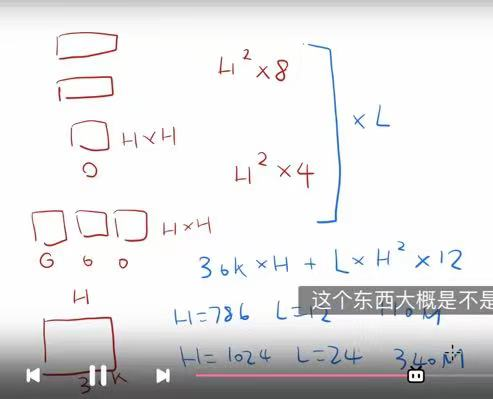
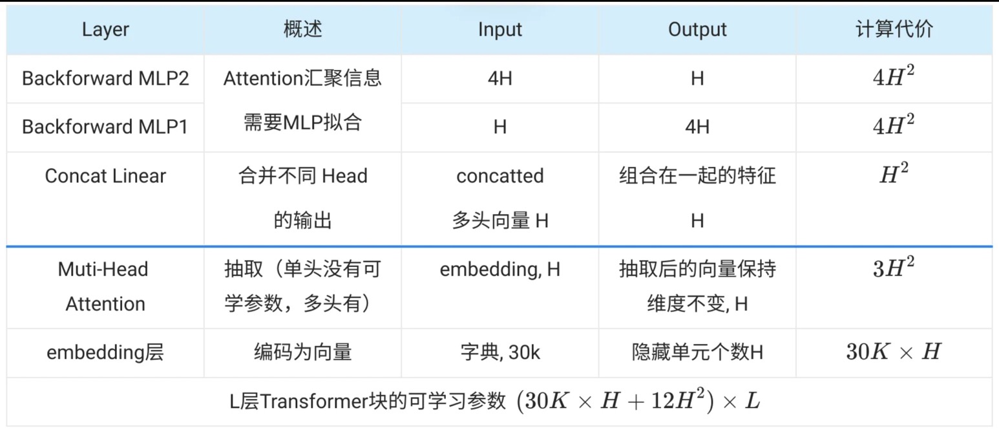
为了进行比较，BERTBASE 的选择与 OpenAI GPT 具有相同的模型大小。然而，重要的是，BERT Transformer 使用双向自注意力，而 GPT Transformer 使用受限自注意力，其中每个标记只能关注其左侧的上下文。
输入/输出为了使 BERT 处理各种下游任务，我们的输入能够在一个 token 序列中明确表示为单个句子和一对句子（例如，〈问题，答案〉）。在整个工作中，“句子”可以是一段连续的文字，而不是实际的语言句子。 “序列”是指 BERT 的输入 token 序列，它可以是单个句子，也可以是打包在一起的两个句子。
与transformer的不同：Transformer训练的时候它的输入是一个序列对，因为它的编码器解码器会分别输入一个序列，但是bert这个地方只有一个编码器，所以为了应对处理两个句子的情况，需要把两个句子变成一个序列
我们使用具有 30,000 个token词汇的WordPiece 嵌入。每个序列的第一个标记始终是一个特殊的分类标记（[CLS]）。与该标记对应的最终隐藏状态用作分类任务的聚合序列表示。句子对被打包成一个序列。我们以两种方式区分句子。首先，我们用一个特殊的标记（[SEP]）将它们分开。其次，我们向每个token加入可学习的嵌入，指示它属于句子 A 还是句子 B。如图 1 所示，我们将输入嵌入表示为 E，将特殊 [CLS] 标记的最终隐藏向量表示为 C ∈ RH ，第 i 个输入标记的最终隐藏向量为 Ti ∈ RH。
wordpiece的想法是如果一个词在整个词典里面出现概率不大的话，应该把这个词切开看子序列，这个子序列很有可能是词根，出现次数很多，这样词典就会比较小，减少了模型的总参数量。CLS对应的输出，BERT希望它最后表示的是一整个序列的信息，因为BERT使用的是Transformer的编码器，没有解码器中的mask，故每个词可以看到其他所有词的信息，所以CLS可以放在第一个，因为它也能看到整个句子的信息。

图 1：BERT 的整体预训练和微调程序。除了输出层之外，预训练和微调都使用相同的架构。使用相同的预训练模型参数来初始化不同下游任务的模型。在微调过程中，所有参数都会被微调。 [CLS] 是添加在每个输入示例前面的特殊符号，[SEP] 是特殊的分隔符标记（例如分隔问题/答案）。
token进入bert得到它的embedding表示，bert中最后一个transformer块的输出就是词元的bert表示
对于给定的token，其输入表示是通过对相应的token、段（在哪一个句子，A还是B）和位置（次元在序列中的位置信息）嵌入求和来构造的。这种结构的可视化如图 2 所示。
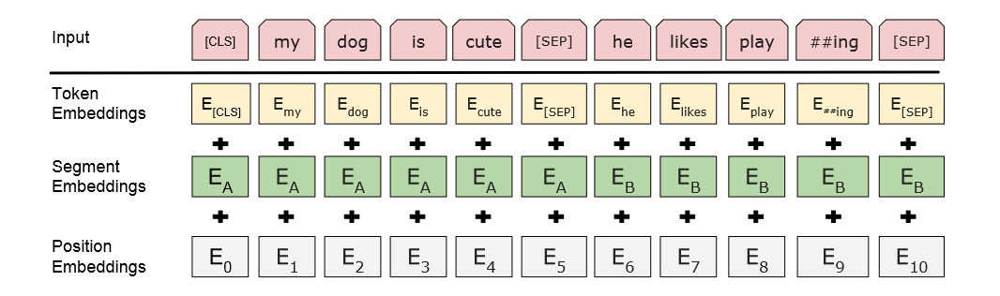
3.1 预训练BERT
与彼得斯等人 (2018a) 和 Radford 等人 (2018)不同，我们不使用传统的从左到右或从右到左的语言模型来预训练 BERT。相反，我们使用本节中描述的两个无监督任务来预训练 BERT。此步骤如图 1 的左侧部分所示。
任务1:Masked LM
直观上，我们有理由相信深度双向模型比从左到右模型或从左到右和从右到左模型的浅层串联更强大。不幸的是，标准条件语言模型只能从左到右或从右到左进行训练，因为双向条件允许每个单词间接“看到自己”，并且该模型可以简单地以多层语境的方式预测目标单词。
为了训练深度双向表示，我们只需随机mask一定比例的输入token，然后预测这些mask token。我们将此过程称为“掩码 LM”（MLM），尽管它在文献中经常被称为完形填空任务。在这种情况下，与mask token相对应的最终隐藏向量被输入到词汇表上的输出 softmax 中，就像在标准 LM 中一样。在我们所有的实验中，我们随机屏蔽每个序列中15%的 WordPiece token的。与去噪自动编码器（Vincent et al., 2008）相比，我们只预测屏蔽词而不是重建整个输入。
如果一个token是由WordPiece输入的话，它有15%的概率随机替换成一个掩码，但是对于特殊词元，比如第一个次元与分割词元就不做替换
虽然这使我们能够获得双向预训练模型，但缺点是我们在预训练和微调之间造成了不匹配，因为替换的token也就是[MASK]在微调期间不会出现。为了缓解这种情况，我们并不总是用实际的 [MASK] token替换“屏蔽”单词。训练数据生成器随机选择 15% 的 token 位置进行预测。如果选择第 i 个token，我们将第 i 个token替换为 (1) 80% 真的把token替换为[MASK] (2) 10% 为随机token (3) 10%为未更改的第 i 个token。然后，Ti 将用于通过交叉熵损失来预测原始token。我们在附录 C.2 中比较了该过程的变体。
任务2:下一个句子预测（NSP）
许多重要的下游任务，例如问答（QA）和自然语言推理（NLI）都是基于理解两个句子之间的关系，而语言建模不能直接捕获这种关系。为了训练理解句子关系的模型，我们预先训练二值化的下一个句子预测任务，该任务可以从任何单语语料库轻松生成。具体来说，当为每个预训练示例选择句子 A 和 B 时，50% 的时候 B 是 A 之后的实际下一个句子（标记为 IsNext），50% 的时间它是来自语料库的随机句子（标记为NotNext）。如图 1 所示，C 用于下一句预测 (NSP)。 尽管它很简单，但我们在第 5.1 节中证明，针对此任务的预训练对 QA 和 NLI 都非常有益。 NSP 任务与 Jernite 等人 (2017)以及 Logeswaran 和 Lee (2018)使用的表征学习目标密切相关 。然而，在之前的工作中，只有句子嵌入被传输到下游任务，其中 BERT 传输所有参数来初始化最终任务模型参数。
预训练数据
预训练过程很大程度上遵循现有的语言模型预训练文献。对于预训练语料库，我们使用 BooksCorpus（8 亿字）（Zhu et al., 2015）和英语维基百科（2,500M 字）。对于维基百科，我们仅提取文本段落并忽略列表、表格和标题。为了提取长的连续序列，使用文档级语料库而不是打乱的句子级语料库（例如 Billion Word Benchmark（Chelba 等人，2013））至关重要。
3.2 微调BERT
微调非常简单，因为 Transformer 中的自注意力机制允许 BERT 通过交换适当的输入和输出来对许多下游任务进行建模，无论它们涉及单个文本还是文本对。对于涉及文本对的应用，常见的模式是在应用双向交叉注意力之前独立编码文本对，例如 Parikh 等人（2016）；徐等人（2017）。相反，BERT 使用自注意力机制来统一这两个阶段，因为使用自注意力对串联文本对进行编码，有效地包括两个句子之间的双向交叉注意力。
就是说bert通过将两个句子放入一个序列输入编码器，使得transformer中的自注意力机制能够相互看到两个句子里的信息，但是在编码器解码器架构中，编码器一般看不到解码器中的东西，bert这一点会更好一些，但是代价在于不能做机器翻译类的任务
对于每个任务，我们只需将特定于任务的输入和输出插入到 BERT 中，并端到端地微调所有参数。在输入端，预训练中的句子 A 和句子 B 类似于 (1) 释义中的句子对，(2) 蕴涵中的假设-前提对，(3) 问答中的问题-段落对，以及 (4) 文本分类或序列标记中的简并文本-∅对。在输出处，token表示被馈送到token层面任务的输出层，例如序列标记或问答，并且 [CLS] 表示被馈送到输出层以进行分类，例如蕴涵或情感分析。
就是说词语方面的下游任务可以用每一个token的输出来做处理，在句子层面的任务比如句子向量提取，句子情感分析的场景可以用CLS的信息来做处理
与预训练相比，微调相对便宜。从完全相同的预训练模型开始，论文中的所有结果最多可以在 1 小时内在单个 Cloud TPU 上复制，或者在 GPU 上几个小时内复制。7 我们在相应的文章中描述了特定于任务的细节第 4 节的小节。更多详细信息请参见附录 A.5。
4. 实验
在本节中，我们将展示 BERT 在 11 个 NLP 任务上的微调结果。
4.1 通用语言理解评估（GLUE）
通用语言理解评估 (GLUE) 基准是各种自然语言理解任务的集合。 GLUE 数据集的详细描述包含在附录 B.1 中。
为了在 GLUE 上进行微调，我们如第 3 节中所述表示输入序列（对于单个句子或句子对），并使用与第一个输入标记（[CLS]）相对应的最终隐藏向量 作为聚合表示。微调过程中引入的唯一新参数是分类层权重 W ∈ RK×H，其中K是标签数量。我们用 C 和 W 计算标准分类损失，即 。
我们使用32的批量大小，并对所有 GLUE 任务的数据进行3 轮微调。对于每个任务，我们在开发集上选择最佳的微调学习率（、、 和 之间）。此外，对于 BERTLARGE，我们发现微调在小数据集上有时不稳定，因此我们运行了几次随机重启并在开发集上选择了最佳模型。通过随机重启，我们使用相同的预训练检查点，但执行不同的微调数据洗牌和分类器层初始化。
结果如表 1 所示。BERTBASE 和 BERTLARGE 在所有任务上都大幅优于所有系统，与现有技术相比，平均准确度分别提高了 4.5% 和 7.0%。请注意，除了注意力屏蔽之外，BERTBASE 和 OpenAI GPT 在模型架构方面几乎相同。对于规模最大、报道最广泛的 GLUE 任务 MNLI，BERT 获得了 4.6% 的绝对精度提升。在官方 GLUE 排行榜10上，BERTLARGE 获得了 80.5 分，而 OpenAI GPT 在撰写本文时获得了 72.8 分。
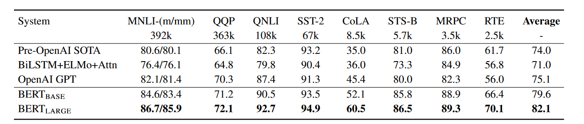
表 1：GLUE 测试结果，由评估服务器评分 (https://gluebenchmark.com/leaderboard)。每个任务下面的数字表示训练示例的数量。 “平均”列与官方 GLUE 分数略有不同，因为我们排除了有问题的 WNLI 集(见(10) in https://gluebenchmark.com/faq.)。BERT 和 OpenAI GPT 是单模型、单任务。表上显示的是 QQP 和 MRPC 的 F1 分数，STS-B 的 Spearman 相关性，其他任务的准确性分数。我们排除了使用 BERT 作为其组件之一的模型。
我们发现 BERTLARGE 在所有任务上都显着优于 BERTBASE，尤其是那些训练数据很少的任务。第 5.2 节更深入地探讨了模型大小的影响。
4.2 斯坦福问答数据集 (SQuAD v1.1)
斯坦福问答数据集 (SQuAD v1.1) 是 10 万个众包QA Pair的集合（Rajpurkar 等人，2016）。给出一个问题和一篇来自维基百科的包含答案的段落，任务是预测答案文本在段落中的跨度。
如图 1 所示，在问答任务中，我们将输入问题和段落打包为单个序列，其中问题使用 A 嵌入，段落使用 B 嵌入。微调时我们只引入起始向量和结束向量 。计算 Ti 和 S 之间的点积，之后计算段落中所有单词的 softmax： ，得到单词i作为答案范围开始的概率。类似的公式用于答案范围的末尾。从位置i到位置j的候选跨度的得分定义为S·Ti + E·Tj，并且使用j≥i的最大得分跨度作为预测。训练目标是正确开始位置和结束位置的对数似然之和。我们微调3个epoch，学习率为 ，批量大小为 32。(注意这里是微调，看图1的右边的图)
表 2 显示了排名靠前的条目以及排名靠前的已发布模型的结果）。 来自SQuAD 排行榜的顶级结果没有可用的最新开源模型的描述，并且允许在训练其模型时使用任何公共数据。因此，我们在模型中使用适度的数据增强，首先在 TriviaQA 上进行微调，然后再在 SQuAD 上进行微调。
我们性能最佳的系统在整体性能方面比顶级排行榜系统高出 +1.5 F1，在单个系统方面比顶级排行榜系统高出 +1.3 F1。事实上，我们的单一 BERT 模型在 F1 分数方面优于顶级集成模型。没有TriviaQA微调数据后，我们只损失了0.1-0.4F1，仍然大幅优于所有现有模型。
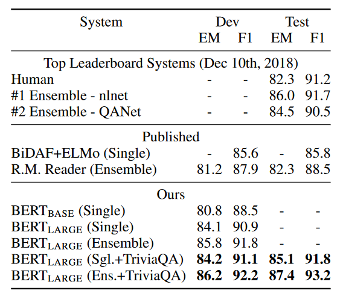
4.3 SQuAD v2.0
SQuAD 2.0 任务扩展了 SQuAD 1.1 问题定义，允许所提供的段落中不存在简短答案的可能性，从而使问题更加现实。
我们使用一种简单的方法来扩展 SQuAD v1.1 BERT 模型来完成此任务。我们将没有答案的问题的答案范围视为以 [CLS] 标记开始和 [CLS] 标记结束（即从第一个CLS到第二个CLS即为没有答案的问题，即句子A）。开始和结束答案跨度位置的概率空间被扩展为包括 [CLS] 标记的位置。为了进行预测，我们将无答案范围的分数： 与最佳非空范围的分数进行比较。当$$s_{\hat{i} ,j} > s_{null} + τ$$ 时，我们预测一个非空答案，其中在开发集上选择阈值τ以最大化 F1。我们没有为此模型使用TriviaQA数据。我们微调了 2 个 epoch，学习率为 ，批量大小为 48。
与之前的排行榜和热门的模型（Sun 等人，2018 年；Wang 等人，2018b）相比的结果如表 3 所示，不包括使用 BERT 作为其组件之一的系统。我们观察到比之前最好的系统 F1 提高了 +5.1。
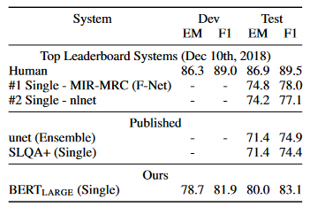
4.4 SWAG
Situations With Adversarial Generations (SWAG) 数据集包含 113k 个句子对完成示例，用于评估有根据的常识推理。给定一个句子，任务是在四个选项中选择最合理的延续。
在对 SWAG 数据集进行微调时，我们构建了四个输入序列，每个序列包含给定句子（句子 A）和可能的延续（句子 B）的串联。唯一引入的特定于任务的参数是一个向量，其与 [CLS] 标记的表示C点积得到每个选择的分数，该分数通过 softmax 层进行归一化。
我们对模型进行了 3 个时期的微调，学习率为 ，批量大小为 16。结果如表 4 所示。BERTLARGE 比作者的baseline ESIM+ELMo 系统高出 27.1%，比 OpenAI GPT 高出 8.3%。
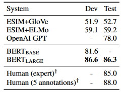
5. 消融研究
在本节中，我们对 BERT 的多个方面进行了消融实验，以便更好地了解它们的相对重要性。额外的消融研究可在附录 C 中找到。
5.1 预训练任务的影响
我们通过使用与 BERTBASE完全相同的预训练数据、微调方案和超参数来评估两个预训练目标，证明了 BERT 深度双向性的重要性：
无 NSP：使用“masked LM”（MLM）训练但没有“下一句预测”（NSP）任务的双向模型。
LTR 和无 NSP：仅左上下文模型，使用标准从左到右 (LTR) LM 而不是 MLM 进行训练。仅左约束也适用于微调，因为删除它会引入预训练/微调不匹配，从而降低下游性能。此外，该模型是在没有 NSP 任务的情况下进行预训练的。这可以直接与 OpenAI GPT 进行比较，但使用我们更大的训练数据集、我们的输入表示和我们的微调方案。
我们首先考察NSP任务带来的影响。在表 5 中，我们表明删除 NSP 会显着损害 QNLI、MNLI 和 SQuAD 1.1 的性能。接下来，我们通过比较“No NSP”与“LTR & No NSP”来评估训练双向表示的影响。 LTR 模型在所有任务上的表现都比 MLM 模型差，在 MRPC 和 SQuAD 上下降幅度较大。
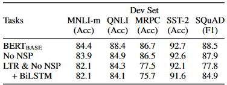
表 5：使用 BERTBASE 架构对预训练任务的消融。 “No NSP”是在没有下一句预测任务的情况下进行训练的。 “LTR & No NSP”被训练为从左到右的 LM，没有下一句预测，就像 OpenAI GPT 一样。 “+ BiLSTM”在微调过程中在“LTR + No NSP”模型之上添加了一个随机初始化的 BiLSTM。
对于 SQuAD 来说，直观上很明显，LTR 模型在 token 预测方面表现不佳，因为 token 级隐藏状态没有右侧上下文。为了真实地尝试加强 LTR 系统，我们在顶部添加了一个随机初始化的 BiLSTM。这确实显着改善了 SQuAD 的结果，但结果仍然比预训练的双向模型差很多。 BiLSTM 会损害 GLUE 任务的性能。
我们认识到，也可以训练单独的 LTR 和 RTL 模型，并将每个标记表示为两个模型的串联，就像 ELMo 所做的那样。然而：(a) 这比单个双向模型贵两倍； (b) 这对于像 QA 这样的任务来说是不直观的，因为 RTL 模型无法根据问题给出答案； © 它严格来说不如深度双向模型强大，因为它可以在每一层使用左右上下文。
5.2 模型规模的影响
在本节中，我们探讨模型大小对微调任务准确性的影响。我们训练了许多具有不同层数、隐藏单元和注意力头的 BERT 模型，同时使用与前面描述的相同的超参数和训练过程。
所选 GLUE 任务的结果如表 6 所示。在该表中，我们报告了 5 次随机重新启动微调的平均开发集准确度。我们可以看到，更大的模型在四个数据集上都带来了严格的准确率提高，即使对于只有 3,600 个标记训练示例的 MRPC，并且与预训练任务有很大不同。也许令人惊讶的是，我们能够在相对于现有文献已经相当大的模型之上实现如此重大的改进。例如，Vaswani 等人探索的最大的 Transformer。 (2017) 是 (L=6, H=1024, A=16)，编码器有 100M 个参数，我们在文献中找到的最大 Transformer 是 (L=64, H=512, A=2)，有 235M参数。相比之下，BERTBASE 包含 110M 参数，BERTLARGE包含 340M 参数。
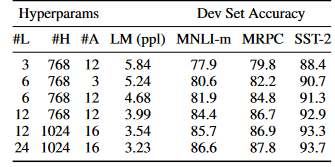
众所周知，增加模型大小将导致机器翻译和语言建模等大规模任务的持续改进，表 6 中所示的保留训练数据的 LM 困惑就证明了这一点。但是，我们相信这是第一项令人信服地证明，只要模型经过充分的预训练，扩展到极端模型大小也能在非常小规模的任务上带来巨大改进。彼得斯等人（2018b）提出将预训练双向LM大小从两层增加到四层对下游任务影响的结果好坏参半，Melamud等人 (2016) 顺便提到，将隐藏维度大小从 200 增加到 600 有帮助，但进一步增加到 1,000 并没有带来进一步的改进。这两项先前的工作都使用了基于特征的方法——我们假设当模型直接在下游任务上进行微调并且仅使用极少数随机初始化的附加参数时，特定于任务的模型可以从更大、更具表现力的预训练中受益，即使下游任务数据非常小，也可以训练表示。
5.3 BERT 的基于特征的方法
迄今为止提出的所有 BERT 结果都使用了微调方法，其中在预训练模型中添加了一个简单的分类层，并且所有参数在下游任务上联合微调。然而，从预训练模型中提取固定特征的基于特征的方法具有一定的优势。首先，并不是所有的任务都可以很容易地用 Transformer 编码器架构来表示，因此需要添加特定于任务的模型架构。其次，预先计算一次昂贵的训练数据表示，然后在此表示之上使用更便宜的模型运行许多实验，具有重大的计算优势。
在本节中，我们通过将 BERT 应用于 CoNLL-2003 命名实体识别 (NER) 任务来比较这两种方法。在 BERT 的输入中，我们使用保留大小写的 WordPiece 模型，并包含数据提供的最大文档上下文。按照标准实践，我们将其制定为token层面的任务，但在输出中用CRF层。我们使用第一个sub-token的表示作为NER标签集上token级分类器的输入。
为了删除微调方法，我们应用基于特征的方法，从一层或多层中提取激活，而无需微调 BERT 的任何参数。这些上下文嵌入用作分类层之前随机初始化的两层 768 维 BiLSTM 的输入。
结果如表 7 所示。BERTLARGE 的表现与最先进的方法相当。性能最佳的方法:把预训练 Transformer 的前四个隐藏层的 token 表示连接起来，这仅比微调整个模型慢了 0.3 F1。这表明 BERT 对于微调和基于特征的方法都是有效的。
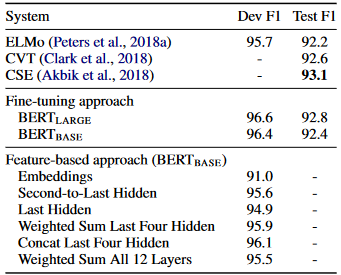
6. 结论
近期由于语言模型的迁移学习而取得的实证改进表明，丰富的、无监督的预训练是许多语言理解系统不可或缺的一部分。特别是，这些结果甚至使低资源任务也能从深度单向架构中受益。我们的主要贡献是将这些发现进一步推广到深层双向架构，从而使相同的预训练模型能够成功处理广泛的 NLP 任务。
两个前面的工作，一个是ELMo，它用了双向的信息，但是它的网络结构是比较老的RNN，另一个是GPT，它用了一个新一点的transformer的架构，但是它只能处理单向的信息把ELMo使用双向信息的方法与gpt使用的transformer合起来就成了BERT，做语言模型时不是预测未来而是变成完形填空
附录：
A.BERT的附加细节
A.1 预训练任务说明
我们在下面提供预训练任务的示例。
掩码LM和掩码过程:假设未标记的句子是my dog is hairy，并且在随机掩码过程中我们选择了第4个token（对应于毛茸茸的），我们的掩码过程可以进一步如下表示：
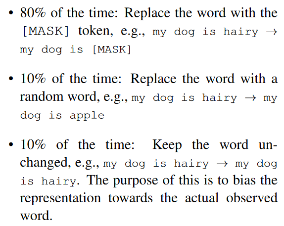
此过程的优点是 Transformer 编码器不知道将要求预测哪些单词或哪些单词已被随机单词替换，因此它被迫保留每个输入token的分布式上下文表示。此外，由于随机替换仅发生在所有token的 1.5%（即 15% 的 10%）中，因此这似乎不会损害模型的语言理解能力。在 C.2 节中，我们评估了该操作的影响。
与标准语言模型训练相比，Masked LM 仅对每batch中15%的 token 进行预测，这表明模型可能需要更多的预训练步骤来收敛。在 C.1 节中，我们证明 MLM 的收敛速度确实比从左到右的模型（预测每个 token）稍慢，但 MLM 模型的学习效果远远超过了增加的训练成本。
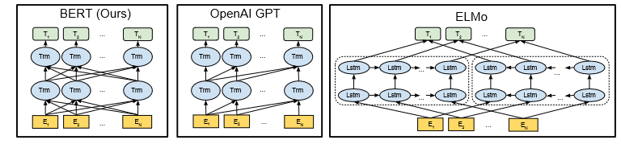
图 3：预训练模型架构的差异。 BERT 使用双向 Transformer。 OpenAI GPT 使用从左到右的 Transformer。 ELMo 使用独立训练的从左到右和从右到左 LSTM 的串联来生成下游任务的特征。在这三者中，只有 BERT 表示在所有层中同时以左右上下文为条件。除了架构差异之外，BERT 和 OpenAI GPT 是微调方法，而 ELMo 是基于特征的方法。
下一句预测:下一句预测任务可以通过以下示例进行说明。
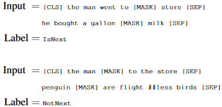
##表示在原文中是跟着前面的那个词，这里就是WordPiece中划分的例子
A.2 预训练过程
为了生成每个训练输入序列，我们从语料库中采样两段文本，我们将其称为“句子”，尽管它们通常比单个句子长得多（但也可以更短）。第一个句子接收 A 嵌入，第二个句子接收 B 嵌入。 50% 的情况下 B 是 A 之后的实际下一个句子，50% 的情况下它是随机句子，这是为了“下一句预测”任务而完成的。对它们进行采样，使组合长度≤512个token。在WordPiece标记化之后应用LM掩蔽，统一掩蔽率为15%，并且不对部分词片进行特殊考虑。
我们使用 256 个序列的批量大小（256 个序列*512个标记=128,000个token/batch）进行1,000,000个步骤的训练，这大约是33亿单词语料库中的 40个epoch。我们使用Adam，学习率为 权重衰减为0.01，前10,000个步骤的学习率预热，以及学习率的线性衰减。我们在所有层上使用0.1的dropout概率。我们遵循 OpenAI GPT，使用gelu激活函数而不是标准relu。训练损失是平均屏蔽 LM 似然以及平均下一句预测似然之和。
学习率warm up+线性衰减就是先升后减。
BERTBASE 的训练在Pod配置中的4个云TPU上进行（总共16个TPU 芯片。）。BERTLARGE的训练在 16 个云TPU上进行（总共 64个TPU 芯片）。每次预训练需要 4 天才能完成。
较长的序列成本过高，因为注意力与序列长度成二次方。为了加快实验中的预训练速度，我们对90%的步骤使用序列长度为128的模型进行预训练。然后，其余10%步骤我们训练512序列长度来学习位置嵌入。
A.3 微调过程
对于微调，大多数模型超参数与预训练中的相同，除了批量大小、学习率和训练轮数之外。丢失概率始终保持在 0.1。最佳超参数值是特定于任务的，但我们发现以下可能值范围适用于所有任务：
- Batch size: 16, 32
- Learning rate (Adam): , ,
- Number of epochs: 2, 3, 4
我们还观察到，大数据集（例如，100k+ 标记的训练示例）对超参数选择的敏感度远低于小数据集。微调通常非常快，因此只需对上述参数进行详尽的搜索并选择在开发集上表现最佳的模型是合理的。
A.4 BERT、ELMo 和 OpenAI GPT 的比较
在这里，我们研究了最近流行的表示学习模型（包括 ELMo、OpenAI GPT 和 BERT）的差异。模型架构之间的比较如图 3 所示。请注意，除了架构差异之外，BERT 和 OpenAI GPT 都是微调方法，而 ELMo 是基于特征的方法。
与 BERT 最相似的现有预训练方法是 OpenAI GPT，它在大型文本语料库上训练从左到右的 Transformer LM。事实上，BERT 中的许多设计决策都是有意使其尽可能接近 GPT，以便最大限度地比较这两种方法。这项工作的核心论点是，第 3.1 节中提出的双向性和两个预训练任务占了大部分实证改进的份额，但我们确实注意到 BERT 和 GPT 的训练方式还存在其他几个差异：
- GPT 在 BooksCorpus（8 亿字）上进行训练； BERT 在 BooksCorpus（8 亿字）和维基百科（2,500M 字）上进行训练。
- GPT 使用句子分隔符（[SEP]）和分类器标记（[CLS]），仅在微调时引入； BERT 在预训练期间学习 [SEP]、[CLS] 和句子 A/B 嵌入。
- GPT 经过 1M 步骤的训练，批量大小为 32,000 个单词； BERT 接受了 1M 步的训练，批量大小为 128,000 个单词。
- GPT 对所有微调实验使用相同的学习率 $； BERT 选择特定于任务的微调学习率，使其在开发集上表现最佳。
为了隔离这些差异的影响，我们在第 5.1 节中进行了消融实验，该实验证明大部分改进实际上来自两个预训练任务及其实现的双向性。
A.5 不同任务微调说明
图 4 展示了在不同任务上微调 BERT 的情况。我们的特定任务模型是通过将 BERT 与一个额外的输出层相结合而形成的，因此需要从头开始学习最少数量的参数。其中，（a）和（b）是序列级任务，而（c）和（d）是令牌级任务。图中，E表示输入嵌入，Ti表示token i的上下文表示，[CLS]是分类输出的特殊符号，[SEP]是分隔非连续token序列的特殊符号。
B 详细的实验设置
B.1 GLUE 基准实验的详细描述。
表 1 中的 GLUE 结果来自 https://gluebenchmark.com/leaderboard 和 https://blog.openai.com/language-unsupervised。 GLUE 基准包括以下数据集，其描述最初由 Wang 等人 (2018a)总结：
MNLI 多流派自然语言推理是一项大规模、众包蕴涵分类任务 (Williams et al., 2018)。给定一对句子，目标是预测第二个句子相对于第一个句子是否是蕴涵、矛盾或中性。
QQP Quora 问题对是一项二元分类任务，其目标是确定 Quora 上提出的两个问题在语义上是否等效（Chen 等人，2018）。
QNLI 问题自然语言推理是斯坦福问答数据集（Rajpurkar 等人，2016）的一个版本，已转换为二元分类任务（Wang 等人，2018a）。正例是包含正确答案的（问题，句子）对，负例是来自同一段落的不包含答案的（问题，句子）。
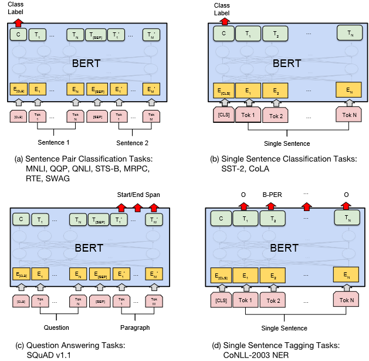
SST-2 斯坦福情感树库是一个二元单句分类任务，由从电影评论中提取的句子以及人类对其情感的注释组成（Socher 等人，2013）。
CoLA 语言可接受性语料库是一项二元单句分类任务，其目标是预测英语句子在语言上是否“可接受”（Warstadt et al., 2018）。
STS-B 语义文本相似度基准是从新闻标题和其他来源提取的句子对的集合（Cer 等人，2017）。它们被标注了从 1 到 5 的分数，表示两个句子在语义上的相似程度。
MRPC 微软研究释义语料库由从在线新闻源自动提取的句子对组成，并通过人工注释来判断该对中的句子在语义上是否等效（Dolan 和 Brockett，2005）。
RTE 识别文本蕴涵是类似于 MNLI 的二元蕴涵任务，但训练数据要少得多（Bentivogli 等人，2009）。14
WNLI Winograd NLI 是一个小型自然语言推理数据集（Levesque 等人，2011）。 GLUE 网页指出，该数据集的构建存在问题，15 并且提交给 GLUE 的每个经过训练的系统的表现都低于预测多数类的 65.1 基线精度。因此，为了对 OpenAI GPT 公平，我们排除了该集合。对于我们提交的 GLUE，我们总是预测多数类
C 附加消融研究
C.1 训练步骤数量的影响
图 5 显示了从已预训练 k 个步骤的检查点进行微调后的 MNLI Dev 准确度。这让我们可以回答以下问题：
- 问：BERT 真的需要这么大量的预训练（128,000 个单词/batch * 1,000,000 步骤）才能达到很高的微调精度吗？答案：是的，与 500k 步相比，在 1M 步训练时，BERTBASE 在 MNLI 上实现了近 1.0% 的额外准确率。
- 问：MLM 预训练的收敛速度是否比 LTR 预训练慢，因为每批中只预测了 15% 的单词，而不是每个单词？答案：MLM 模型的收敛速度确实比 LTR 模型稍慢。然而，就绝对精度而言，MLM 模型几乎立即开始优于 LTR 模型。
C.2 不同屏蔽程序的消融
在第 3.1 节中，我们提到 BERT 在使用屏蔽语言模型（MLM）目标进行预训练时使用混合策略来屏蔽目标标记。以下是评估不同掩蔽策略效果的消融研究。
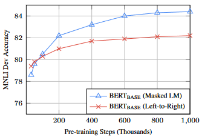
请注意，掩蔽策略的目的是减少预训练和微调之间的不匹配，因为 [MASK] 符号在微调阶段永远不会出现。我们报告 MNLI 和 NER 的开发结果。对于 NER，我们报告了微调和基于特征的方法，因为我们预计基于特征的方法的不匹配将会被放大，因为模型将没有机会调整表示。
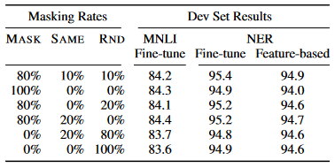
结果如表8所示。表中，MASK表示我们将目标token替换为MLM的[MASK]符号； SAME意味着我们保持目标token不变； RND意味着我们用另一个随机token替换目标token。表左侧的数字代表MLM预训练时使用的具体策略的概率（BERT使用80%、10%、10%）。论文的右侧部分代表开发集结果。对于基于特征的方法，我们将 BERT 的最后4层连接起来作为特征，这在 5.3 节中被证明是最好的方法。从表中可以看出，微调对于不同的掩蔽策略具有惊人的鲁棒性。然而，正如预期的那样，在将基于特征的方法应用于NER 时，仅使用 MASK 策略是有问题的。有趣的是，仅使用RND策略的性能也比我们的策略差得多。